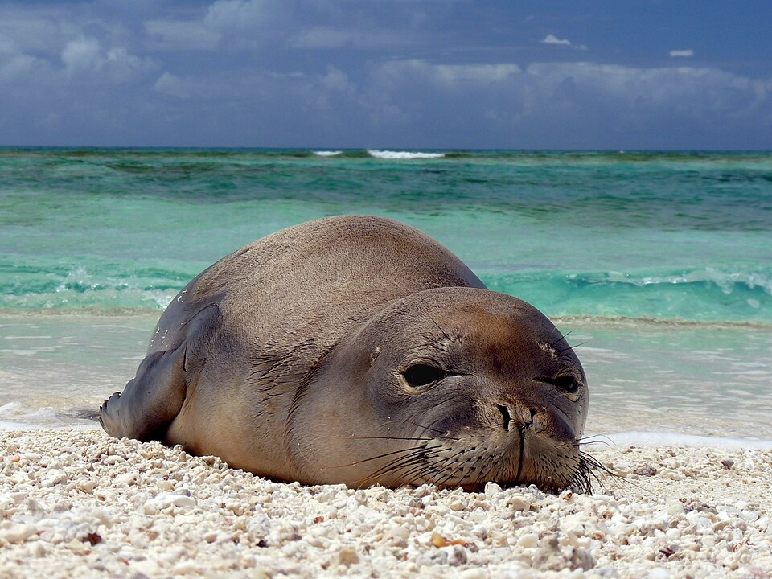
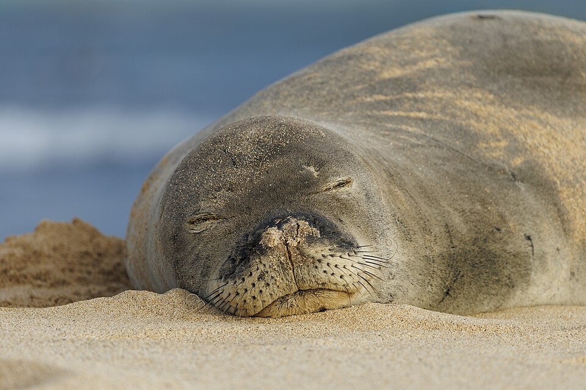

Foca-Monge-do-Havaí (Neomonachus schauinslandi)



Estado de conservação: Em perigo de extinção (Endangered), segundo a União Internacional para a Conservação da Natureza (IUCN).
Habitat: Vive nas águas tropicais do arquipélago do Havaí, principalmente em praias arejadas, recifes de coral e ilhas remotas do noroeste havaiano. Também pode ser encontrada em algumas áreas das principais ilhas do Havaí.
Alimentação: Alimenta-se de peixes, lulas, polvos, crustáceos e enguias. Caça mergulhando em águas rasas e profundas à procura de presas.
Principais ameaças:
- Perda de habitat: Degradação contínua das áreas costeiras e ilhas onde vivem.
- Emaranhamento acidental: Ficar presa em redes e equipamentos de pesca abandonados.
- Poluição marinha: Principalmente o descarte inadequado de lixo plástico nos oceanos.
- Predadores naturais: Ataques de tubarões aos filhotes nas áreas de nascimento.
- Mudanças climáticas: Impactos diretos que alteram os locais de descanso e alimentação.
- Vulnerabilidade genética: Baixa diversidade genética devido ao tamanho reduzido da população.
Curiosidades da Foca-Monge-do-Havaí:
- Raridade extrema: É uma das espécies de foca mais raras e ameaçadas de todo o mundo.
- População reduzida: Existem apenas cerca de 1.500 a 1.600 indivíduos vivendo na natureza.
- Banhos de sol: Costuma passar longos períodos descansando nas praias de areia.
- Linhagem única: É uma das duas únicas espécies de foca-monge que ainda existem no planeta.
- Pelagem dos filhotes: Os filhotes nascem com uma pelagem preta e macia chamada "lanugem", que é trocada após algumas semanas de vida.